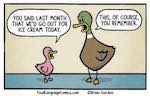
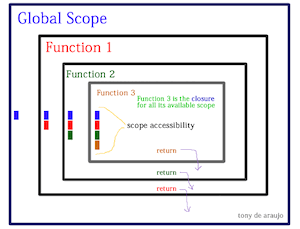

Technical Learnings
This blogs delves into some of the web development tools and techniques taught during Enspiral Dev Academy 2016/2017
HTML, CSS, the DOM - Part 1

What is HTML/CSS/the DOM? An analogy: My kids were colouring in a blank poster today, with just the outlines of some animal pictures. HTML is like that basic outline. It provides the content of text, images, video etc, but nothing else. CSS is like the animals being coloured in different hues, and also given spots or stripes. CSS provides the styling such as colour and font. The DOM is the structure of the poster. It is a way of interacting with the HTML and CSS and provides a familiar structure that helps us to find familiarity in every website. The DOM is also a way of interacting with, and editing the website, without using a text editor. There are developer tools provided in the browser and you can inspect specific elements to see their properties.
TOPHTML, CSS, the DOM - Part 2

Grid based design is where the html layout is structured using rows and columns. The common number of columns is 12 to allow for a range of layout designs. This is a flexible way of allowing different layouts while staying with the boxify concept.
Responsive web design is a big deal these days because there are so many different kinds of devices being used. From large screen desktops, to small mobile phones - the same website needs to be able to be usable and readable on every device in the world! So being responsive is kinda important!
Semantic structure is when we start looking at the hierarchy of elements such as text on a page. Good practice is giving larger headings at the top of a page, an h1 tag, and this tells the browser that the heading is important and will be semantically placed at the top. Then h2 under that, and h3 under that, etc.
TOPResponsive, mobile-first sites

A responsive website is one that will automatically adjust itself to fit your device. It will resize text, headings, images and other elements, change the layout and any other changes that help the person (you) read the website. It's important because of the huge range of devices used these days. Most people would use a mobile device ie. a phone, to browse websites and so any business or organisation wants to make sure the user has a good experience with their site.
Mobile first design is where the layout is determined based on the dimensions of a mobile phone initially, and then changed to fit desktop browsers later on. If you do desktop design first, its more likely to be a website that needs a bit of computer processing power and if opened on a phone, may be clunky and slow, or not work at all. If the design is mobile-first, then its likely to work well on phones, and also desktops.
Frameworks are like libraries. They have a bundle of code that you can borrow (forever), so that web developers don't need to keep reinventing the wheel. Some pros are that it saves time and you can design a website that is industry standard and works well for most users and browsers. The cons are that they can be complicated, and take up more processing power to utilise than a simple website. You also have to stick to the framework semantics which you may not be used to.
A wireframe is a sketch or outline of what the proposed website design will look like. It is usually just boxes or frames for where the content will go - no writing or pictures or colours yet. It is used to get an idea of the balance on the screen mainly, and to see if elements fit on the page nicely.
TOPWireframe images
Here are some (rough) examples of wireframes I did for this website.


Javascript basics

How does Javascript compare to HTML and CSS? If the webpage was a house, HTML is the brick and mortar. CSS is the paint and the style of curtains. And Javascript, is the automatic door opener, the dimmable lights and the temperature controlled wine cellar. It makes it all so much more interactive and...cool.
Control flow and loops is the way in which JS sets out instructions or steps. It is in order. For example, making a cup of tea. You could first turn on the jug. Then you have to keep checking if the jug is boiled (loop) until the right condition is met, which is hot water. At which point, and not before, you could then pour water into your mug.
Data in arrays is accessed by calling the data's place in the list, ie. [0], [1], [2] etc. A piece of data in objects however, needs to be found with its unique name ie. {name: "Bob"}.
Functions are a bunch of instructions put together in a tidy wee box and given a name. We can then use the function name later on, and avoid having to type out the same instructions over and over. Its a time saver.
TOPProblem solving

Solving problems in code can be very frustrating. It can be as simple as a missing coma, and it feels terrible because it may have taken you half an hour to find that error. It's been really important to find efficient ways of debugging code and there are many tools and techniques to help developers when we are stuck. Here are a few:
Pseudocode is really handy but very hard to spell! It made the activities much easier to complete, in fact without the guidance of pseudocode I doubt I would have been able to finish a lot of the activities.
Trying Something is what I do all day. I just jump in start typing. I've found it not terribly succesful though and probably wastes a lot of my time. Will not be doing as much of it.
Rubber Ducky - as my dog knows, I am a fan. Its just so good to clarify your mind. Looking at a bunch of code on the screen and trying to see issues is hard. Much better to look away and talk it out. Or go to Slack and type it out with your friends. Who are more communicative and helpful than the dog.
Reading error messages this is something that is invaluable - these can be seen both in the console log and the terminal window, and both are really great clues as to where the problem lies.
Googling is an easy thing to do, but not necessarily the best method. However, online documents for the technology are very important as reference tools, especially MDN docs.
Asking peers for help alllll day, I love asking for help. I have such clever people in my cohort that I would be silly not to.
Now lets look at some useful Array Methods
.map() is a javascript method which is applied to an array or list. map() uses the nominated function and applies that function to each element in the array, in order. It then collects the results of the function being applied on each element, in a new array. An example of this may be a function that multiplies each number in an array by itself. If the initial array was [1,3,6] then the map() uses the multiplication function to create a new array [1, 9,36]. The original array is still there; [1,3,6].
.filter() is a method that also creates a new array after applying a function to an existing array. In the new array it only includes elements from the first array that return 'true' to the function. For example an array of names ['Bob', 'Sarah', 'John', 'Sue'] has a function applied to it that finds people born before a certain date. The .filter() will create a second array like ['Bob', 'Sue'] because they were born before the specified date in the function. Once again, the first array stays unchanged.
.reduce() is a method that will apply a function to an array and return a summarised version of the array. There are four parameters, previousValue, currentValue, currentIndex and array. Depending on what those parameters are, will determine how the initial array is summarised. Numbers can be added together. Strings can be collated into one sentence. For example an array with substrings such as [[1,2],[3,4],[5,6]], using .reduce() with appropriate parameters, can return [1,2,3,4,5,6]. Alternatively an array of [1,2,3,4,5] can be reduced using a Sum function and return [15]. A variable with several elements of say; word: "This", nextword: "has", thirdWord: "been", lastWord: "reduced" could return a reduced array of ['This', 'has', 'been', 'reduced']
PHEW! If you made it this far, Thank You for your time!!
TOPJavascript Language
Here are the use cases for the following:
Parentheses ( )
- Hold the parameters passed to a function (function calls) e.g. function(2,7)
- Group an expression to control the order of operations such as multiplication and addition e.g. (6*4)+(3/5)
- To indicate an empty/anonymous function ie. function()
- To surround conditional statements e.g. if (condition1)
Brackets [ ]
- Accessing the properties of an object e.g. console.log(myArray[0])
- Holding elements of an array e.g. var myArray = [0,1,2,3,4]
- Brackets always indicate the contents are an Array.
Braces { }
- A sequence of statements inside {} is called a block e.g. var myVar = { property: value, property: value}
- Shows where a function starts and ends e.g. function add () { the function code here }
- To show where a loop or conditional statement starts and ends e.g. if (condition 1) { result code here }
Single quotes ' '
- Used to contain a string, or inside a string, sometimes in combination with double quotes e.g. 'This is a string' or "This is called a 'string'"
- Important to be consistent - if using single quotes, always use single quotes
Double quotes " "
- Used for strings also, but can avoid some issues that arise for single quotes such as needing a quote within a quote ie. 'This is called a 'String'', as you can't put single quotes inside single quotes.
- Use "This is a 'String'" instead
- Comes down to preference, but whichever you prefer, stick with it and be consistent.
Scope
Scope refers to the way that variables and functions relate to each other in a programme. Variables can be outside of a function, or inside. Depending on where they are in relation to each other, will affect whether or not they can be 'seen'. For example, a variable created on its own, is a Global variable. It can be seen or used by any other variable or function in the programme. However, a variable can also be created inside a function, and then it becomes a Local variable. It can only be seen or used inside that function, or by another sub-function. Basically the scope is the area within which you have access to variables.
TOP